The Multimedia Revolution
Before the rise of modern smartphones, the portable multimedia landscape was somewhat fractured. While today's mobile devices consolidate all manner of audio and video into a single package, the tech industry was slow to bring these elements together. Apple's iconic iPod and a plethora of MP3 players popularized portable digital music, yet consumers had fewer options regarding decent, reasonably priced video players. For some of the earliest dedicated video players available, often the supported formats were limited, disk space cost a premium, and battery life was not particularly efficient. At this time, there was demand for both music and video on-the-go, but initially the former was better served by companies and products.
It was in this environment that companies turned to several solutions, one of those being video game consoles. Nintendo released the Play-Yan late in the Game Boy Advance's lifetime, a special cartridge capable of audiovisual playback using files from an SD card. Earlier, Sony's Playstation Portable let gamers view their own videos or buy Universal Media Discs with films burned to the medium. Prior to all that, Majesco Entertainment started releasing GBA cartridges with cartoon shows and select movies crammed onto ROM chips. One of the earliest attempts at bringing video to handheld consoles is, however, perhaps the most obscure and forgotten.
On November 20, 2003, a company called AM3 released a new peripheral for the GBA called the Advance Movie Adapter. It was an oversized cartridge that featured a side-slot for accepting SmartMedia cards. Through the adapter, the Game Boy could read the data stored on the card. Each SmartMedia card contained video, typically 1 or 2 episodes of an anime or a full-length feature film in some cases. Audio and video were compressed to better work with the GBA's hardware. Once given Nintendo's approval and the backing of franchises such as Pokemon and Detective Conan, AM3 launched the Advance Movie Adapter exclusively in Japan. These efforts enjoyed a fair amount of success across the country, being supported well into 2007 before AM3 completely pivoted to the Nintendo DS.
Throughout the early 2000s, handheld gaming systems proved very attractive as relatively low-priced, energy efficient, and user-friendly devices with the added benefit of some amount of copy-protection. The hardware was already designed around audio and video output, making it a natural choice during this era. Unfortunately, emulating this aspect of both GBA and PSP currently requires more work. UMD movie support still needs to be added or improved in PSP emulators. The Play-Yan remains an elusive target for GBA emulators as well. Thankfully, however, Majesco's GBA Video Cartridges have been working in mGBA and VBA-M for years. Even though TV shows on handheld consoles don't actually count as a video games, they need to be preserved as a matter of history. They're integral to understanding the evolution of mobile media as we know it today. There is much to do in this area of emulation, and AM3's Advance Movie Adapter serves as a perfect starting point.
Terra Firmware
I have investigated a lot of challenging hardware over the years, as detailed in various Edge of Emulation articles. Having focused primarily on the Game Boy, I've already documented most of its strange and exotic accessories. In each case, I've gone after ones I felt the most comfortable researching at the time, using the experience I gained from one to help me with the next. I feel quite at home reverse-engineering devices that use infrared, Link Cables, or specialty cartridges with existing dumps that can be debugged. However, as the list of undocumented Game Boy hardware dwindles, I'm left with a handful of products that force me to learn new tricks. The Advance Movie Adapter falls into this category, becoming one of the most difficult and complex products I've ever had to pick apart.
The immediate problem with the adapter is its cartridge design. It has large half-black, half-white plastic shell that extends past the GBA's slot. On the right side it features a built-in SmartMedia card reader. This isn't standard Game Boy stuff at all. Aside from the Play-Yan and the Jukebox, the Advance Movie Adapter is the only officially licensed GBA cartridge that lets users insert some kind of flash memory card. Fully supporting the adapter in GBE+ meant providing the emulator with whatever information was stored on the SmartMedia card. That, in turn, meant I'd have to dump the SmartMedia card. At this point, it was unknown if just the files on the SmartMedia card would suffice or if an entire disk image of the card was necessary. On top of that, there was an unidentified encryption scheme on the SmartMedia card. All I knew when I started was that it used 128-bit DES as some sort of anti-piracy measure.
On top of all of these issues, little to nothing was known about how the adapter booted up. The adapter has to run code - firmware in this case - on the GBA just like any other cartridge, but no one had made a complete dump of it. Normally people can use something like a Sanni cart reader, GBxCartRW, or even an NDS running homebrew to dump almost any GBA cartridge. Unfortunately, the Advance Movie Adapter is anything but normal. On two separate occassions, associates contacted me via Discord and shared what they'd managed to pull from the adapter. It was always incomplete, repeating the same values every few kilobytes, indicating to me that the cartridge must have had some special control mechanisms to swap data in/out or perform some kind of ROM banking technique. The dumps wouldn't even boot up in any emulator, appearing to rely on some unimplemeneted hardware behavior specific to the adapter.
In short everything about the Advance Movie Adapter was a total mystery. No one knew what AM3 SmartMedia card data looked like, and no one knew what the adapter's boot sequence looked like. The only way to go any further was to probe the hardware directly. As the adapter had a good run in Japan, it's not hard to find. I stumbled upon brand new sets of Detective Conan Episodes #1 and #2 for a fair price last year. The effects of the pandemic were still inflating shipping costs from Japan, however, by now it was just part of doing business. The Advance Movie Adapter was sold in small plastic packages, typically as a bundle that included at least 1 SmartMedia card. Additionally, some individual episodes were sold without the adapter.
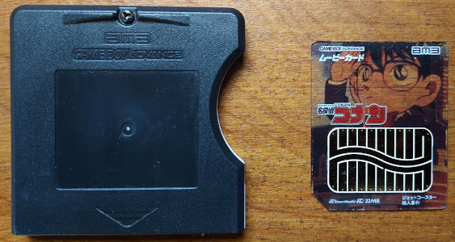 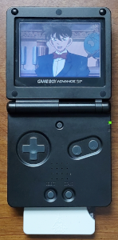
The Advance Movie Adapter along with an AM3 SmartMedia card.
Once the adapter arrived in my possession, I tried dumping anything on the cartridge using a DS. As expected, the results were the same as my colleagues: a 1KB blob of code that kept repeating. This code was likely used to setup the GBA before reading from the SmartMedia card and playing video. How it did so was not clear, but if I looked at the instructions and mapped out its programming, I could begin to piece things together. Running the 1KB dump through GBE+'s debugger, the first thing I did was look for any unusual reads or writes. It's common for unique cartridges like the Advance Movie Adapter to access non-standard features and hardware by writing to areas of memory that most GBA software ordinarily never touch. Looking for any such memory addresses is a good way to begin reverse-engineering these types of devices. After a brief search, I found the GBA wrote to a rather odd location at 0x8010420. This was notably strange; normally any address from 0x8000000 all the way to 0xDFFFFFF is supposed to map to the cartridge's ROM.
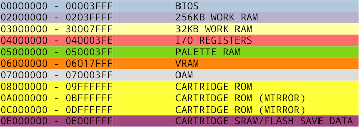
A brief table of the GBA's memory map. Only 32MB of ROM can be accessed at once. ROM is mirrored twice and can be accessed at different speeds.
This large block of memory addresses should typically be read-only. There are some notable exceptions however, namely cartridge-based GPIO (used for real-time clocks, Boktai's Solar Sensor, WarioWare's gyroscope, Drill Dozer rumble), EEPROM for game saves, and a host of I/O ports on the e-Reader. So, having the Advance Movie Adapter write to this particular address indicates that it does something important related to operating its special hardware. The 1KB of code wrote a value of 0x09 to 0x8010420, and shortly thereafter it read that address again to check the value. It seemed to wait in a loop until Bit 0 of 0x8010420 was set to zero. I theorized that this was some kind of status register, where writing to it triggers an action from the adapter, and it flips Bit 0 "ON" or "OFF" depending on whether the action is finished or not. At that moment, however, I didn't know what action the adapter performed.
Moving on, I saw the 1KB of code initialize various bits of the GBA, much like most commercial games do. My working hypothesus was that the code was bootstrapping the system before possibly loading more code to handle reading the SmartMedia card and running videos. At some point, I assumed, it would grab more instructions from somewhere else. Some of the code was copied to RAM, and once executed, the CPU read from 2 new addresses: 0x8010400 and 0x8010408. Whatever values where at these addresses were later used as parameters (the source and the length, respectively) for copying additional data to RAM where it would later run as code. It appeared my guess had been correct all along, and the adapter pulled in new blocks of code.
I named the source register AM_BLK_ADDR, the length register AM_BLK_SIZE, and the status register AM_BLK_STAT. Having these labels helped organize things throughout this whole process, especially since I didn't know how many other registers I might encounter. It seemed like writing 0x09 to the status register caused the adapter to load some more code at a specified location, like switching ROM banks on earlier DMG/GBC cartridges. I quickly wrote some NDS homebrew to start testing these registers. The default values of AM_BLK_ADDR was 0x8000000 and the default value of AM_BLK_SIZE was 0x400, therefore this new code bank was 1KB in size and would be mapped to the start of cartridge ROM address space.
My NDS homebrew program changed further to mimic the process of writing to the status register. At first, I didn't see anything happen; no new code was loaded. It was only on the second write to AM_BLK_STAT that the data changed. There's a reason why this only worked on the second time, which I'll get to in a bit. At any rate, a fresh 1KB block of code was now loaded. I knew I was on the right path as I found some ASCII strings at the beginning mentioning an "ActImagine Loader". ActImagine was a company partnered with AM3; specifically, they developed the audio/video codec, optimizing it so that standard GBA hardware could run it all on the CPU. Immediately afterward, I altered the homebrew program to continue writing 0x09 to AM_BLK_STAT 32 times and dumping each 1KB block.
The exact length of the Advance Movie Adapter's internal firmware was unknown, so I decided to just choose a random number of blocks and see what the results were. Usually with hardware of this sort, if the CPU tries to read past a certain bank, either the data begins to repeat thanks to memory mirroring or garbage data is returned. In either case, it would be relatively easy to determine the exact size of the firmware by skimming over the dump in hex editor. If it were larger than 32KB, I would have to expand the dump size and try again. Fortunately, I saw the data was mirrored after 12KB. I cut down the dump to this size, and with that, the Advance Movie Adapter's firmware had been successfully dump for the first time.
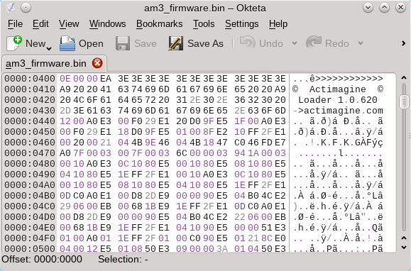
Behold the Advance Movie Adapter's firmware in all its hexadecimal glory!
Evidently, when booting up the adapter, the first block of firmware is automatically loaded. Every time 0x09 is written to the status register, a new 1KB block is loaded sequentially. It starts at the beginning though, so the first swap technically does nothing, which is the reason I had to write to AM_BLK_STAT twice to get any feedback. The initial bootloading part of the firmware loaded the rest of firmware into RAM where it presumably stayed until the GBA powered off. It checked Bit 8 of AM_BLK_STAT to see if it was "ON", otherwise it kept trying to swap in new blocks and copy them. According to my NDS homebrew tests, Bit 8 essentially acted as an end-of-file (EOF) marker. Once all 12 blocks had been swapped, this bit in the status register went from "OFF" to "ON". It's intriguing to see the size of firmware wasn't hardcoded. If AM3 ever planned on changing firmware in later revisions of the adapter they wouldn't have to change this portion of the codebase, so in that regard it's a smart move.
SmartMedia Shenanigans
With the firmware in my possession, I started emulating bits of the adapter in GBE+. Even if only fragments of the hardware were supported, it was required to properly debug things moving forward. Rather than doing all the research at once, the process here was more like doing a small set of tests and emulating the results until something finally worked. The Advance Movie Adapter was simply too intricate for me to tackle in one sitting, so I broke it down into approachable chunks. Once GBE+ could load the firmware and swap data as needed, I let the firmware continue running. Eventually, it wrote the value 0x0B to AM_BLK_STAT. It pinged the status register waiting for Bit 14 to get set "ON", and afterward it wrote to a handful of new, unknown addresses.
For the time being, I ignored those writes and let the firmware proceed. Much to my delight, I finally got some visual output from GBE+. It was everyone's favorite friend, the Blue Screen of Death! As it so happens, if the firmware has any fatal errors, it will draw a red, blue, or green screen depending on what went wrong, although it displays no text to help identify the problem. The source appeared to come from one section of the firmware where it checked a single 32-bit value. GBE+ gave the incorrect value, thus causing the blue screen. The correct value was simply a 4 letter ASCII string called "ASIG". I had no idea what that meant, but there was a clue. Prior to that, the firmware wrote 0x01 to the status register, then started reading from AM_BLK_ADDR. This was very similar to how it loads all 12KB of firmware into RAM, but something was obviously different now.
My first assumption was that it was trying to read from the SmartMedia card. The only problem here was that I didn't have any of that data on hand. The next step then was to dump my SmartMedia cards. For those that are unfamiliar with SmartMedia cards, they were popular in the late 1990s to early 2000s as memory for digital cameras. Their usage eventually fell as smaller cards with higher capacities arrived, chiefly SD cards. These days, it's hardly used anywhere. Some companies still make multi-card readers that work over USB, but luckily I had an old printer lying around the house that accepted SmartMedia cards. Rather than simply copy over all of the files present on my AM3 SmartMedia card, I decided to make a full disk image backup of Detective Conan Episode #1. If this was overkill, I could always mount the backup and take the individual files from there. There was nothing fancy about the process here, just simply using the dd command found on various Unix-like systems to make an exact copy of the target disk drive.
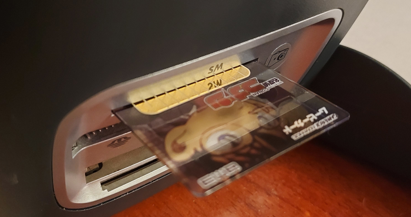
SmartMedia cards aren't common anymore. My old HP PSC 2355 multifunction printer (circa 2005) can still read them though.
The SmartMedia card dump was approximately 32MB in size, which matched the capacity written on the card. Exploring the dump with a hex editor, I discovered it did indeed have that same 4 letter ASCII string "ASIG" present. As I suspected, the firmware had been commanding the Advance Movie Adapter to read data from the SmartMedia card. While that was good news, I was puzzled how the adapter knew exactly where to start reading SmartMedia data. The "ASIG" string was located at the offset 0x1D3C400 (about 29MB into the file) and I hadn't seen the firmware write that address or anything like it anywhere. For the time being, I simply hardcoded that location in GBE+ so I could proceed with debugging.
I managed to get another error screen, this time ominously bright red. The firmware was able to read parts of the file, but when it appeared to try and read something else, everything fell apart in terms of emulation. One issue was that some of those unknown registers I'd found earlier were vital to reading SmartMedia card data. After poking around the firmware's code, I saw that the first register was some kind of file position pointer. For those familiar with C++-style file handling, it seemed to be the equivalent of seekg(), essentially changing what position to read from the SmartMedia card everytime a new block was loaded. It could move forwards or backwards by accepting a positive or negative number; I named it AM_SMC_OFFS. The second register was used to set the size of the block during loading. Consequently, this was named AM_SMC_SIZE. Despite understanding how these two registers worked, the firmware still failed after a certain point.
Right before giving GBE+ a red screen, the firmware read 16-bytes from a large group of unknown registers, then it compared the results with some values it had spent a lot of time calculating. If these two sets of data did not match, the adapter would abort booting up. Using more NDS homebrew, I probed these registers, however, initially I got bogus results. Looking through GBE+'s logs, I noticed that the firmware wrote the value 0x03 to AM_BLK_STAT, something it hadn't previously done during the boot process. Once that was replicated in the homebrew test, the results were identical what the firmware expected. These 16-bytes of data must have been the so-called 128-bit DES encryption key I'd read about (Plot Twist: it wasn't, but more on that later). It seemed writing to the status register in this manner enabled the GBA to access the key. I didn't know what to do with the key at the time, so I simply let GBE+ load it from a file and return the key's individual bytes when appropiate.
Based on my analysis so far, specific values written to AM_BLK_STAT were essentially commands. 0x09 loaded firmware blocks, 0x0B seemed to unlock a bunch of the adapter's I/O registers as it always came before writing them, 0x01 loaded SmartMedia blocks, and now I knew 0x03 revealed the DES key. In my logs, I found a fifth command as well 0x05. This last one was a bit confusing to figure out. It seemingly caused a random number to replace the first 4 bytes of the DES key. Examining the value more closely, however, showed that it was actually a variable representing the length of that "ASIG" portion of data in the SmartMedia card dump. This "ASIG" section was in fact a file on the card, therefore this previously unidentified command switched between reading the DES key and the current file size.
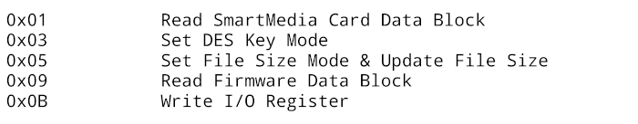
A list of commands sent to the Advance Movie Adapter. Technically, they're psuedo-commands, as each bit of the byte has a specific meaning.
Now things were starting to make a bit more sense. AM3's SmartMedia cards used a FAT-12 filesystem. Rather than read data as one giant block of memory, the Advance Movie Adapter abstracted the filesystem and provided the GBA with access to specific files. That explained why the "ASIG" file was located at some 29MB offset. The mechanism for switching between files is yet another hardware register sitting in the adapter's I/O region. I named this specific register AM_SMC_FILE. Homebrew tests confirmed that changing its value changed the location the adapter starting reading blocks of data. GBE+ only needed to correctly access each file within the SmartMedia card dump, and then most of the adapter's functionality would be complete. However, to successfully do that, the emulator would need at least some knowledge of the underlying FAT filesystem in order to map out each file.
Full-figured Filesystem
When working on other peripherals, I was often forced to become familiar various different technologies, formats, and protocols. Before trying to emulate lots of Game Boy hardware, I had virtually no experience whatsoever with stuff like infrared, serial communications, flash memory, EEPROM, or networking. One never really stops learning new information, and in order to emulate exotic devices, developers have to study areas they might not know a great deal about. Filesystems are one example for me. Prior to working on the Advance Movie Adapter, the only filesystem I'd looked at was the barebones one used by the Turbo File to make saves. Without gaining some insights on how FAT-12 operated though, the adapter would never function in GBE+.
FAT filesystems have extensive documentation available online, so a little help from Wikipedia and Google sorted everything out. To go over the situation again, GBE+ has a complete byte-for-byte copy of the SmartMedia card dumped to a large 32MB file. This dump contains all the data on the card, including the filesystem and individual files. GBE+ needs to know the precise locations of each file so it can return the correct bytes when emulating the adapter. To find the location of each file, GBE+ needs to understand how the FAT filesystem works just enough to do some basic navigation. Other details about the filesystem are irrelevant; the emulator just needs to know where AM3's files are and not much else. It would be easy if the filesystem simply had a list with exact offsets, but that's simply not how FAT does things.
It should be noted that technically the user could dump each file individually and GBE+ could load them up one at a time. That's actually an optional solution I have planned to implement in the future, where the emulator is supplied with a list of files to use when the adapter needs them. It would be similar to how the Dolphin emulator can run games using the filesystem extracted from a GC/Wii disk. However, supporting the raw binary dump of the original media takes priority. Providing a single file is more straightforward for a user than asking them to make a list of a dozen files. Using a complete disk image is the simpler and "purer" route.
At any rate, the first step is to read the Master Boot Record or MBR for short. This is just the first 512 bytes of data in the dump, and it describes how partitions are arranged on the storage medium. The MBR by itself doesn't lead to the SmartMedia card's files, but it does show where the Volume Boot Record, or VBR, lies. The VBR is also sometimes called the Volume ID, and it contains crucial information about sectors, clusters, file allocation tables, and root directory entries. It has 32-byte entries with various fields of information that can be used to calculate the logical addresses of the First File Allocation Table, the Root Directory, and the Data Region. The last one contains the actual data for the files, and it's what GBE+ needs to find. Unfortunately, the logical addresses of the others have to be calculated first.
Ultimately, it's a bit like those infamously lengthy "Trade Sequences" in certain video games. Start with the MBR to get to the VBR. Use the VBR to get to the First File Allocation Table. Use that to get to the Root Directory. Finally, the Root Directory shows where the Data Region is. Things still aren't even finished! The Data Region has a table that can be parsed to find individual files. AM3 SmartMedia cards don't have any fancy directory structures, so when reading the data region, GBE+ doesn't have to move through any folders. The Data Region has 32-byte entries called Directory Entry Structures. Here the filesystem stores data such as the filename (in 8.3 format), creation dates and timestamps, last modification dates and timestamps, file size, and most importantly the starting cluster. The starting cluster is then used to calculate yet another offset, which finally points to the actual file data.
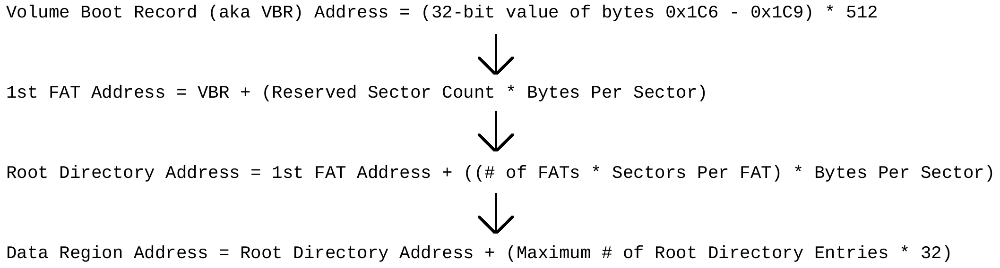
Finding the exact location of an individual file is a multistep process with FAT filesystems.
The task for GBE+ is to grab a list of all the files present in the Directory Entry Structures and make note of their absolute offsets within the SmartMedia card dump. Each time the adapter's firmware changes the value of AM_SMC_FILE, GBE+ will use that offset when reading blocks of SmartMedia card data. The order of the files as they appear in the Data Region's Directory Entry Structures is the number the firmware must use when trying to access a specific file. It counts from zero, so writing a value of 0x05 to the register would pull data from the 6th file. And so with that, GBE+ had implemented support for the Advance Movie Adapter!
Well, almost. The bootup sequence never completed, and I was treated to yet another colorful error screen. Eventually, after going over several logs multiple times, I found a potential problem. There was another register the firmware kept reading, but I couldn't understand what its purpose was. By all accounts, according to my homebrew tests, it seemed like some kind of shadow copy of the AM_SMC_SIZE register. Everytime I read these two registers, their values were the same, so GBE+ treated them the same. Both seemed to return 0x400. I wondered if maybe this unknown register was supposed to keep track of the remaining file size. Disassembling parts and pieces of the firmware's code proved it did check to see if the value ever decreased.
It seemed rather unintuitive to have a dedicated register like this. The firmware could already grab the current file size via AM_FILE_SIZE, and it was more than capable of manually tracking how many bytes it had read from the file and how many were left. I'd assumed that a standalone register for that task was redundant, but apparently that wasn't the case. When I manually altered the value of that register through GBE+'s debugger at the right time, the firmware happily went about its business and bypassed the error screen. Newer homebrew tests confirmed how the register really worked, and so it was named AM_SMC_EOF, as it represented the number of bytes until the End-of-File was reached. Normally it reads back the same value and AM_SMC_SIZE, but if the remaining bytes left to read is less than that, it indicates this value instead. And with that, GBE+ was finally able to fully boot the Advance Movie Adapter's firmware!
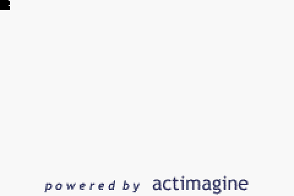
At long last, GBE+ was finally displaying something! But something wasn't quite right...
Well, almost. The emulator really did get past all of the firmware's initial checks and routines. It also started drawing something that wasn't an error screen. The first frame of the AM3 startup animation began to play, as evidenced by the "powered by actimagine" text displayed at the bottom. Everything was frozen, however. It was as if the firmware was waiting on something before proceeding, but what? Broadly speaking, when dealing with non-standard hardware for video game systems like this adapter, the device will halt for a couple of things: user input, internal data, or an interrupt of some kind. User input didn't apply here, as the animation normally ran without any interaction from the user. Internal data was similarly irrelevant, as no new hardware registers were accessed. That left interrupts as the most likely culprit.
Interrupts are used to signal to the CPU and software that the hardware has taken a certain action or reached a certain status, such as reaching the start of the VBlank period or when a memory transfer is complete. Such interrupts exist on the GBA, and one in particular is actually quite rare to see. It's called the Game Pak interrupt. Most games only account for this interrupt in the event the cartridge is removed from the system while still powered on. In case someone accidentally knocks the cartridge loose (or rips it out like a savage) there is some recourse the GBA can take and immediately execute code to lockdown everything. This is handy as it avoids running random code. The Game Pak interrupt, however, can be triggered by just about anything if a cartridge wants to. That is to say, if the cartridge needs to alert the software about something, anything really, it has the power to raise an interrupt and have the CPU start processing it, no cart-yanking necessary. This secondary use of the Game Pak interrupt is quite literally never, ever, ever used at all, for any reason, by any commercial software on the GBA. Almost.
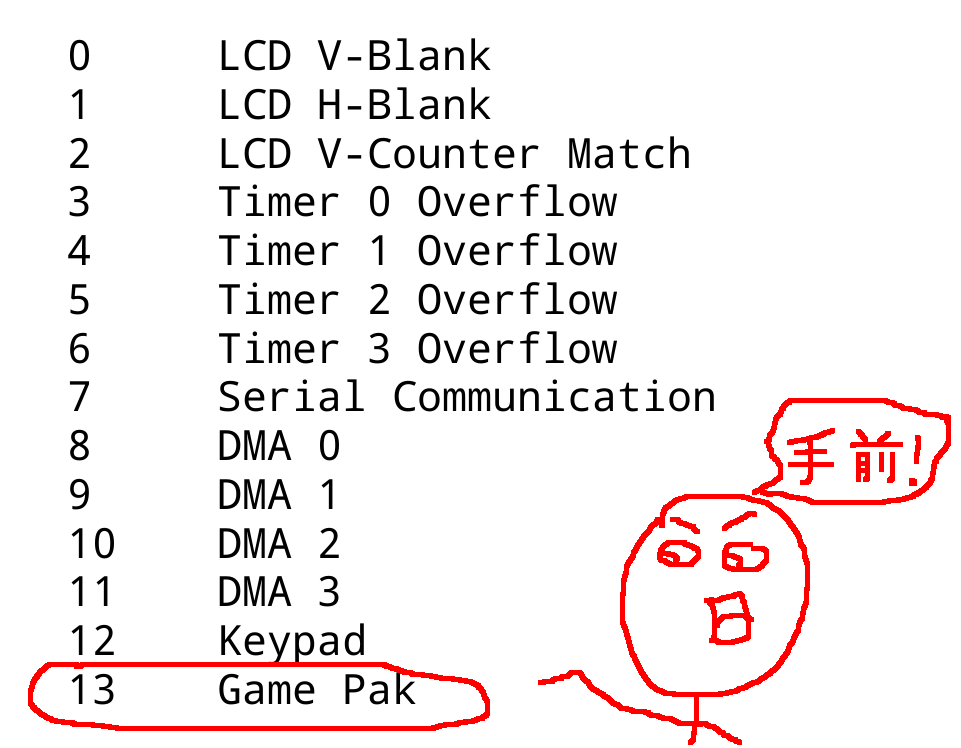
You see that interrupt listed all the way at the end? Nobody uses that. Nobody.
The Advance Movie Adapter likes to be exceptional, breaking all rules and conventions. Its firmware expects to receive Game Pak interrupts not just once or twice, but pretty much constantly, multiple times per-second. By manually forcing these interrupts to occur in GBE+, the animation sequence started, and GBE+ could even start viewing the video. I could think of only one thing that would cause so many Game Pak interrupts so consistently. Every time the adapter read a 1KB block of data from the SmartMedia card, it must have caused the interrupt to occur. The data transfer probably wasn't instantaneous, thus the firmware needed to be alerted when the process finished. Handling audio and video in real-time is obviously time sensitive, so the firmware is always on the lookout for when to start moving things along. Further homebrew tests established that the SmartMedia card transfers did raise Game Pak interrupts. All that was left for GBE+ to do now was issue those interrupts.
Unlike real hardware, GBE+ doesn't delay the transfers. Once it recieves the command to read SmartMedia card data, it's right there for the emulated CPU to read. Still, to mimic some of the delay, GBE+ sends the Game Pak interrupt at the start of HBlank if necessary. This isn't 100% accurate, but it's a good enough compromise to get AM3 videos running at the appropiate framerate. The only shortcoming in GBE+ is that the emulator's internal buffer for the GBA's sample-based channels sometimes overflows, which causes bits of sound to repeat. Normally this doesn't happen for many GBA games, but I guess the way I designed the audio-video sync emulation in GBE+ is not quite perfect for how the Advance Movie Adapter wants to play sounds. It's something to fix in the future, for sure. For the most part, however, the videos run quite well.
Scaled up, the video quality is okay, but one a real GBA it's actually enjoyable. Audio (spoken dialog at least) is pretty clear.
The password is "password"
When I first started poking around the Advance Movie Adapter, I thought its encryption scheme would be the hardest thing to crack. However, once I supplied the firmware with the 128-bit DES key, everything was fine. I figured at least the key would be obscured somehow, or maybe have some sort of difficult to replicate process by which the adapter grabs the key. All it did was send a command by writing to AM_BLK_STAT, and then it just read 16 bytes. The firmware would later use this key on its own and happily play videos in GBE+. On the surface, there simply wasn't anything complicated going on.
The encyrption used by the Advance Movie Adapter is actually rather minimal. Some SmartMedia cards have built-in copy-protection known simply as "ID", that is to say, each card has a unique, one-of-a-kind 128-bit number permanently written to it. No two cards will have the same ID. Cards that support this feature have a symbol, and naturally all of AM3's card have it. Software can look at this to identify specific cards, or use it for encryption purposes. At first, I thought all of the files on the SmartMedia card were encrypted with the ID used as a key, but that was not the case. A colleague of mine had also made their own dumps of AM3 SmartMedia cards. They had multiple copies of a Detective Conan Episode #1, but only 1 file differed between them.
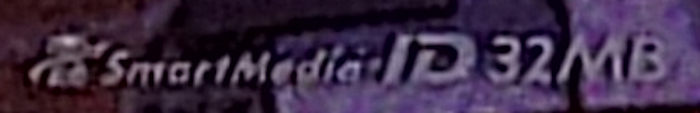
SmartMedia cards marked with an "ID" logo have a unique 128-bit number used in copy-protection schemes.
If every file were encrypted with a unique key, every file of every dump would have been different. Now it seemed that just an individual file was actually encrypted. Together, we confirmed that this was the 00.AM3 file. It's a small file measuring at only 136 bytes. At the beginning is a 4-character ASCII string "SMID", which I assumed stood for "SmartMedia ID". The next 4 bytes is the length of the usable data within the file, so altogether only 128 bytes are relevant. The firmware goes through many, many operations prior to opening the 00.AM3 file, but as far as I understood things, it used other pieces of a couple of files to start decrypting the those 128-bytes. Eventually, the firmware ends up with a 16-byte array of unencrypted data which should match the SmartMedia card's ID. If there is no match, the boot process aborts
Initially, I had believed that the DES key itself was the SmartMedia card's ID used for all cryptographic functions. However, the ID merely acts as a final check. This is validated by the fact that the firmware internally calculates the same value after decryption no matter what ID GBE+ provides, even all zeroes. In that sense then, the 00.AM3 file acts as a sort of "lock" against physical piracy. If a given user copies an AM3 SmartMedia card to a generic blank SmartMedia card, this generic card will fail to boot when running inside the Advance Movie Adapter. The firmware will decrypt the lock file, but the results from the lock file have to match the SmartMedia card's ID, which is unique.
There are several benefits to doing partial encryption and verification. When mass producing AM3 SmartMedia cards that have the same videos on them, only this relatively tiny lock file needs to be unique; the rest of the data can remain the same. This avoids having to decrypt the entire SmartMedia card too when running on a GBA. AM3 also sold their own brand of blank SmartMedia cards that could be taken to kiosks to write new videos for consumers, and the software on those machines likely had to calculate and create the lock file themselves, so this miniscule size speeds up the overall process. A smaller file like that also means less chance of corruption.
This copy protection scheme was probably only ever designed to handle casual piracy concerns, making sure random kids couldn't burn copies of Pokemon episodes for their friends. Against more digital means, it's very susceptible, almost laughably so. For GBE+ to properly emulate the Advance Movie Adapter, it needs 3 pieces of information: the firmware, and AM3 SmartMedia card dump, and the 16-byte ID. The ID is what unlocks the ability for the firmware to play videos. However, consider that the firmware, after having decrypted the 00.AM3 file, has a copy of what it expects the ID to look like. If someone were to take a peek at the GBA's RAM or CPU while the firmware was running, they would know what ID the firmware is looking for. Supply that ID to the firmware, and it runs without any trouble.
While ordinarily it would require an extremely convoluted amount of engineering to physically intercept this value, it's trivial to virtually dissect the GBA with an emulator's debugger. It didn't take long for me to pinpoint where in RAM the firmware stored a 16-byte array representing the ID it wanted. I believed it would have been possible for the GBE+ to grab this ID and use it if the user didn't want to provide their own ID. To prove that it worked, I dumped my second AM3 SmartMedia card (Detective Conan Episode #2) but neglected to dump the card's ID. GBE+ waited for the firmware to reach a certain point, copied the necessary RAM, and used that ID instead. It worked flawlessly. I won't judge AM3 too harshly for essentially leaving the password in plain sight because 1) it held up for years since we're just now able to freely make copies and 2) I didn't want them to make a copy protection scheme that was actually difficult to bypass.
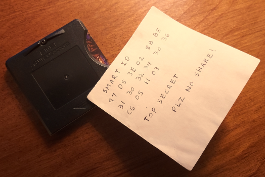
While this image is a joke, it's not far off from what the firmware does internally. That's the real SmartMedia ID from one of my cards by the way ;)
A "reel" piece of history
So now the Advance Movie Adapter has been successfully emulated after nearly 19 years. The subject of this article technically has nothing to do with actually playing games. The most interaction users have with the adapter's firmware is via playback controls like starting, stopping, fast forwarding, and rewinding. Some multi-episode AM3 SmartMedia cards also give users the option of choosing which one to start. There's a whole lot of video, but not a whole lot of game. As previously mentioned though, products like the adapter played an important role in the gradual progression of mobile video during the early 2000s. The Advance Movie Adapter also predates the Game Boy Advance Video cartridges, making it the first officially licensed attempt at offering consumers video on the GBA. As such, despite not being a video game, the adapter is arguably a critical piece of the handheld's history.
The adapter's firmware has been uploaded to the Internet Archive for educational and archival purposes. I've always wanted to be one of the first to dump stuff like a system's BIOS or similar data, so it feels good to contribute something substantial. Hopefully it helps people better understand how the audio and video encoding works, and maybe perhaps enlighten us on how it all compares to the Game Boy Advance Video cartridges. Personally, I think the AM3 videos hold up quite nicely in practice. It's actually rather fun watching anime despite the limitations present. The artifacts in AM3 videos are far less prominent than its American counterparts. Of course, it's not completely eliminated, but it's only really obvious with darker colors (particularly blacks, blues, and browns). Everything else is rather decent given the GBA's screen size. Audio (which most of the time for anime amounts to dialog) is as crisp as it needs to be and doesn't sound horribly garbled or compressed.
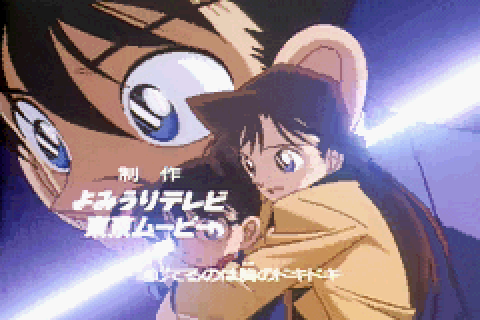
AM3 video quality looks like what you'd expect from scaling down video to 240x160.
The GBA Video Cartridges on the other hand have a constant kind of moiré pattern. It seems to not use enough colors as well (see random bits of blue on Sonic's gloves) and numerous compression artifacts.
This brings me to the subject of preserving the AM3 SmartMedia cards. Surprisingly, the Advance Movie Adapter itself is not needed. It only provides the firmware and GBE+ can grab the 16-byte SmartMedia ID by itself. The SmartMedia data can be retrieved through any reader. The main problem facing preservation is the exact format of SmartMedia card dumps. While the most direct method would be to make a full disk image of the card, this is a less than optimal solution. Keep in mind that the SmartMedia card has a live, writeable FAT-12 filesystem. Any and all changes to the filesystem would result in a totally different CRC32, MD5, or SHA256 hash, making verification troublesome. Even something as simple as updating a file's timestamp would do that. There's also the issue that an operating system might make these kinds of minor changes to the filesystem just by accessing the drive, making a "clean" dump impossible to obtain.
In my opinion, the best way forward would be to preserve the files themselves along with their original timestamp data. The timestamps are interesting and worthwhile to examine because they generally accurately reflect when specific cards were publically released in Japan. However, this data doesn't require the whole filesystem. The individual files can similarly be pulled from the filesystem; afterwards they can be hashed one by one for a given AM3 SmartMedia card. There are only about a dozen files per card, so a database would have to only group together a small number of them under a single entry. The tricky part then is the "lock" file used as copy protection. Each and every card will have a different lock file, even if the card has the same anime episodes or movies. For a database focused on cataloging things for verification, this lock file is a bit of a nightmare. I'd suggest ignoring it altogether, since everyone's hashes of that file will be different. Nothing is ever going to match.
Ultimately, it's not my call to make, just suggestions from my perspective as an emulator developer. Hopefully, however, AM3 SmartMedia cards will finally get the attention they deserve. There are over 40 known AM3 SmartMedia cards out there that came with pre-written movies or shows. Another dozen blank gashapon cards were released for AM3's kiosks; some second-hand cards available on eBay or Mercari might have an unknown number of unique episodes only released on those machines. To the best of my knowledge, no one knows how many (if any) of these videos could exist. It's certainly a project that would benefit from a large community effort. If anyone is interested in helping out, I'd advise checking out the AM3 SmartMedia card dumping guide I wrote earlier this year.
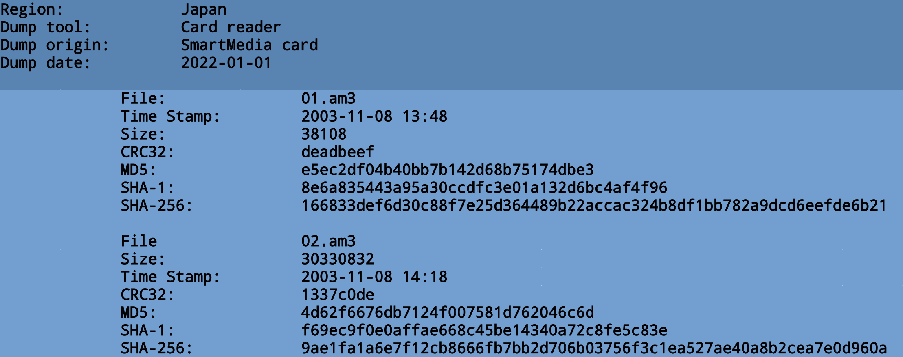
A mockup for a potential system of cataloging and preserving AM3 SmartMedia cards.
Director's Cut
That about concludes this adventure. Overall, the Advance Movie Adapter was quite a wild ride. Using an unknown dump format for the media itself, extracting the firmware, piecing together undocumented registers and their functions, facing off against encryption, traversing a real filesystem, and contending with a rarely used GBA interrupt: there was a lot more going on than I expected. Personally, I'm still somewhat amazed I actually managed to get everything working in the end. There are quite a bit of so-called "moving parts" involved with emulating the Advance Movie Adapter, and all of them have to operate properly, otherwise the whole thing fails. Even so, we now have extensive documentation on the adapter and its SmartMedia cards, as well as working emulation.
It's been 5 full years since I began this journey and wrote my first Edge of Emulation article. My fascination with Game Boy hardware has led me to all kinds of places in that time. If you had told me all of the crazy stuff I'd be investigating, especially before I became an emudev, I would have found it quite hard to believe. I've always felt that emulation should be as thorough and complete as possible no matter how obscure certain games or products might be, I just never figured I would ever play any role at all in making it possible.
After all that's happened since 2017, I'm glad to say that the vast majority of the officially licensed Game Boy hardware is currently emulated in some shape or form. Previously, at least when I first got interested in this field, there were over a dozen items in this category. Now there's only a handful left to conquer. It's thanks to the combined work of the emulation and game preservation scene that we've made it this far. Make no mistake, however, our job isn't finished. Even when these other few devices are emulated, other systems with their own peripherals and accessories are still out there, waiting for someone to take a look at the mysteries hidden within their hardware. It's a seemingly eternal task.
As a final note, I feel it's time to reveal a particular project that I've been focusing on for the last year: my upcoming book. It's the product of hundreds of hours of research and writing, featuring a detailed look at every officially licensed bit of hardware that directly interacted with Game Boy software. Included within its pages, readers will find the history of each device, technical descriptions of how it works, their overall impact on the gaming industry, and how they relate to other features or ideas found in different consoles. The book contains hundreds of photos and illustrations of the hardware itself and shows hundreds of screenshots from the software in action. There'll even be a bonus section exploring several unreleased add-ons, including never-before-seen photos of the NetCard.
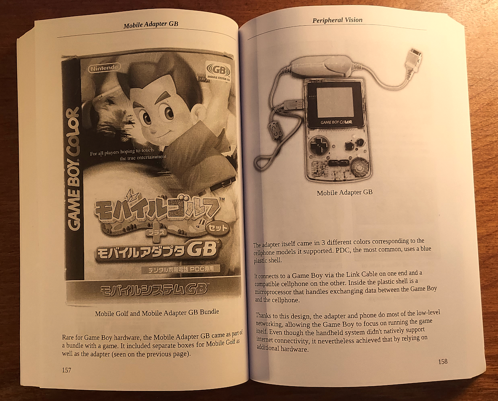
It's been a dream of mine to become a published author for some time. Now it's really happening!
The first draft is complete, and work is being done on a more polished second draft. It will be done soon-ish, hopefully. Unfortunately, it consumes a lot of my time these days, leaving me unable to respond to emails, Reddit, and Discord promptly. Still, the hardest parts are done (I think), and I'm very exciting to finally start launching my writing career. Keep in mind, this book wouldn't have been possible without emulation. As important as it is to preserve video games, we also need to observe, review, comment upon, and contextualize them in order to fully understand and appreciate the history behind them.
As always, remember: Never give up. Never surrender. Emulate everything!